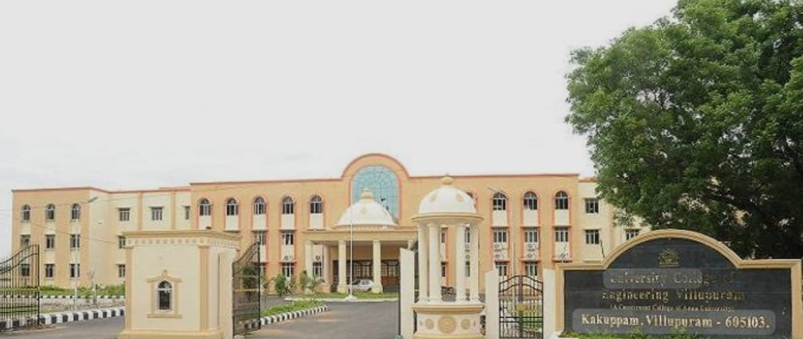

VILLUPURAM
UNIVERSITY COLLEGE OF ENGINEERING

The first version of Anna University was formed in 1978 and various governments changed the varsity's structure and affiliation scope repeatedly. In 2001, under the Anna University Amendment Act of 2001, the erstwhile Anna University became an affiliating university, taking under its wings all the engineering colleges in Tamil Nadu.
This included six government engineering colleges, three government-aided private institutions, and 426 self-financed colleges.
In 2011 and 2012 the constituents colleges were merged back to a single affiliating university and the four regional universities continue to function as a regional campus of the university.